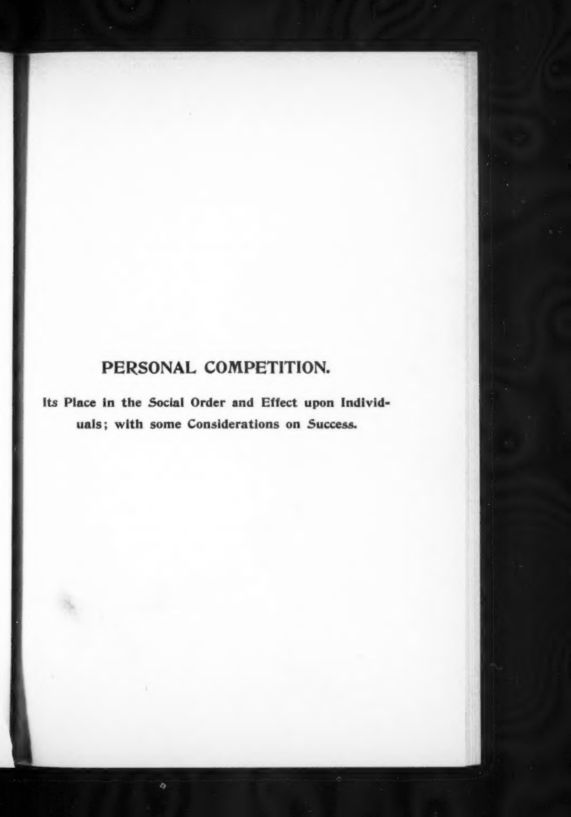

Cooley, 1899: a competição como método de achar o lugar de cada um
Leitura: 12 min
Charles H. Cooley trata a competição pessoal como o processo que distribui funções numa sociedade livre e examina sua intensidade, sua relação com a associação, a moral do sucesso e o padrão de sucesso da época.


Dois candidatos, A e B, disputam uma nomeação. Quem decide pesa a experiência e as qualidades de cada um e escolhe A. Nenhum dos dois precisa saber que estava em disputa até a escolha ser feita. Com esse exemplo Charles H. Cooley define o objeto do seu estudo: a competição pessoal não é necessariamente uma luta hostil, nem algo de que o competidor tenha consciência. É o processo pelo qual, a cada dia, juízos que desconhecemos determinam nossa carreira.
Personal Competition é o nº 2 do quarto volume dos Economic Studies, de abril de 1899. Cooley anuncia que tratará do tema sem referência especial à indústria ou ao comércio, olhando o papel da competição na vida social como um todo e seu efeito sobre o caráter e a felicidade das pessoas. Avisa que muitos leitores têm opiniões fortes sobre o assunto e que espera ao menos mostrar um esforço cuidadoso para ver a verdade e expô-la com justiça.
Para que serve a competição?
A função da competição, diz Cooley, é atribuir a cada indivíduo seu lugar no sistema social. No espaço de uma vida, todos os membros da sociedade são substituídos, e os novos chegam sem nenhum sinal legível do que são capazes de fazer. O único modo de descobrir é experimentar. Pode-se fazê-lo bem ou mal, mas algum processo seletivo é inerente à vida social.
A única alternativa é o status, uma regra fixa, em geral de herança, que define a função de cada um sem levar em conta suas qualidades. Na Índia, segundo o autor, o ferreiro, o sapateiro, o contador e o sacerdote da aldeia recebem o lugar por uma regra de descendência tão rígida quanto a sucessão das coroas europeias. O critério de antiguidade nas promoções é, para ele, uma forma de status sem herança. O status conserva; a competição é o único princípio construtivo.
Cooley contesta a ideia de que o status seja o princípio natural ou primitivo. As relações espontâneas, como entre crianças, são muito competitivas. Entre os indígenas americanos, observa, o status tinha pouca força: segundo a monografia de Dorsey sobre os omaha, qualquer bravo podia organizar uma expedição de guerra se convencesse outros a segui-lo. A vantagem do status é a ordem e a continuidade; o perigo, a rigidez e a decadência. Ele persiste mesmo nos países mais livres, na transmissão da riqueza e nas classes sociais, porque nenhum outro método mostrou capacidade de dar continuidade ao controle da riqueza.
Por que a competição era tão intensa?
Intensidade, para Cooley, é a parcela da atividade absorvida pelo processo seletivo. Ela varia com o grau de liberdade pessoal, com o ritmo da mudança social e na razão inversa da eficiência dos agentes de seleção. De uma criança nascida na Índia britânica, pode-se prever com alguma probabilidade o que e onde estará em trinta anos; de uma nascida numa aldeia americana, ninguém arriscaria um palpite. As indústrias elétricas, que já empregavam centenas de milhares, a abertura de Oklahoma e do Klondike, o exército da guerra com a Espanha, todos exigiram selecionar quem faria o quê.
A essas condições sociais o autor acrescenta uma biológica ou psicológica: os traços de raça. Um povo agressivo, ambicioso e viril, como o anglo-saxão, o alemão ou o irlandês, seria naturalmente competitivo; um inglês ou um alemão aproveitaria as oportunidades e pediria mais onde, segundo ele, um italiano ou um espanhol talvez nem usasse as que tem à mão. A liberdade em grande escala, sustenta, só se tornou possível com o jornal, o telégrafo e a ferrovia, que permitem organizar a opinião sobre áreas extensas. Dos grandes países, os Estados Unidos seriam os mais livres e competitivos, seguidos pela Grã-Bretanha e, talvez, pela Alemanha; as nações latinas, mesmo a França republicana, estariam atrás das teutônicas, aparentemente, diz ele, por algo na psicologia racial dos dois troncos.
O país novo soma às mudanças mundiais as de cada região que passa da agricultura pioneira à indústria. É por isso, mais que pelo clima, que Cooley explica os americanos mais magros, rápidos e nervosos que os parentes ingleses, e as pessoas andando mais depressa nas ruas de Chicago que nas de Londres. A desintegração que acompanha a mudança barateia a competição: as leis justas, o sentimento moral e as instituições educacionais crescem devagar. O regime favorece os aptos e pesa sobre os fracos, os mal colocados e os despreparados. Nesse ponto o autor escreve que talvez não seja verdade, como alguns acreditam, que a raça negra tenha se deteriorado sob a tensão moral da emancipação, mas que a hipótese não é absurda; atribui o pessimismo da literatura francesa à decadência da fé religiosa; vê sinais de deterioração moral, talvez temporária, em parte da população imigrante; e liga a corrupção política às grandes cidades e às populações imigrantes.
Lembra, porém, que a agitação se limitava às fronteiras da mudança: a maioria vivia em comunidades rurais. E que menos competição significa mais status: nos estados do Leste, a herança de riqueza e posição já delimitava classes e dificultava subir do trabalho manual às profissões. Um ensino técnico gratuito que levasse a cada menino a chance do melhor treinamento promoveria a melhor espécie de competição.
Competir e cooperar são opostos?
Não, responde Cooley. Os dois princípios se entrelaçam: o comércio de cada ramo tem associações, revistas e acordos de preço, e é entre os do mesmo ramo que a competição é mais dura; os operários de um sindicato competem por reputação e promoção; os professores de uma universidade, por prestígio. A capacidade de se unir a tempo, afirma, distingue as raças mais capazes das mais fracas, e os americanos a teriam em grau alto. Mas a cooperação inteligente é difícil e chega tarde, e a competição persiste além do ponto útil: pequenas mercearias, farmácias e lojas demais, ferrovias em excesso e guerras de tarifas, igrejas e faculdades pequenas demais.
A tendência, ainda assim, era a organização: convenções, lojas de departamentos, corporações, trustes. O problema é de simetria. As corporações cresceram mais depressa que a legislação, a administração, a ciência econômica e os sindicatos que deveriam equilibrá-las. Cooley rejeita tanto o temor de uma “escravidão” trazida pela organização quanto a condenação indiscriminada da competição.
Discute então a imagem de Lester F. Ward do trigo que, semeado num canto abandonado, cresce raquítico por falta de cultivo. Concorda que a seleção deve tornar-se mais racional, mas aponta três diferenças: a sociedade precisa de inúmeros tipos, não de um só; não há traços visíveis que permitam avaliar alguém de antemão; e falta uma vontade única e sábia que escolha. Não podemos selecionar racionalmente, resume, porque não sabemos o que queremos. A saída é uma educação que ajude cada um a escolher por si e a testar a escolha. Sem ela, as crianças ficam presas à condição dos pais.
“A liberdade é uma coisa positiva, e não negativa.” (Freedom is a positive and not a negative thing)
Os grupos organizados, como competidores, têm mais poder e permanência que as pessoas e são impessoais: a corporação não tem alma, e cada sócio entrega a ela só uma parte de si. Por isso, diz Cooley, exigem controle legal mais estrito. Não há liberdade de associação na Rússia, e pouca na França e na Alemanha comparadas aos Estados Unidos, onde a presunção legal deve favorecer a iniciativa privada até que se prove nociva.
O sucesso premia a desonestidade?
Cooley exige do bem-sucedido dois tipos de faculdade, especiais e sociais, e destaca a constância, a iniciativa, a perseverança, o trato com as pessoas e o bom senso. O inventor de uma máquina às vezes continua pobre enquanto o promotor colhe os frutos; Antônio, escreve, seria melhor presidente de ferrovia que Shylock.
Sobre a moral, cada grupo, como os advogados ou o exército, impõe aos membros os padrões úteis aos seus fins. Henry C. Adams mostrara que um comerciante de camisas que pagasse salários maiores às costureiras seria expulso do mercado; Cooley aceita o ponto, mas rejeita a conclusão de que a competição rebaixa a moral dos negócios ao nível dos piores. O argumento inverso valeria o mesmo: como o comércio vive do crédito, a reputação de integridade decide quem sobrevive. A competição, conclui, apenas impõe as condições existentes a todos, nivelando por baixo ou por cima. A honestidade, sustenta, cresceu com o comércio; e atribui o atraso comercial dos povos hispano-americanos à concepção primitiva, segundo ele muito difundida entre eles, do comércio como disputa de astúcia e engano.
Na terceira classe estão o Oeste antes da lei, quando prosperava quem sabia usar o revólver, e a Comuna de Paris, quando Raoul Rigault se tornou o mais apto e o arcebispo Darboy um dos inaptos. A corrupção da política urbana, para o autor, viria da presença de um vasto elemento estrangeiro não assimilado, cujo voto, por não ser esclarecido, seria fácil de manipular; das empresas de bondes, que subornam funcionários porque seus direitos não estão definidos em lei; e da pressa que afasta os mais capazes da vida pública. Onde as tarifas ferroviárias são desiguais, a honestidade vira política duvidosa.
A competição produz ódio e inquietação?
Em geral não, argumenta Cooley. Cerca de metade dos formados nas escolas de direito, diz ele, é eliminada da profissão, mas por forças impessoais, que geram decepção e não ódio; o comerciante encara o mercado como o agricultor encara o tempo. A amargura nasce do favoritismo, como nas repartições onde a promoção depende de um chefe. A competição aberta obriga a conhecer o outro e, por isso, alarga a simpatia; o exemplo é Lincoln. Os que sofrem são os temperamentos mais sensíveis, entre os quais coloca escritores como Tolstói, Ibsen, Ruskin, Hardy e Howells.
A oportunidade traz descontentamento, a insegurança pesa sobre quem é desalojado na meia-idade, e muitos dos melhores espíritos detestam a época. Mas, para a grande maioria, fleumática, o estímulo seria benéfico: desperta ambição onde havia apatia. Os americanos, diz, são inquietos e reivindicativos, mas não infelizes.
“Nosso contentamento é cinético, não estático.” (Our contentment is kinetic, not static.)
Qual deveria ser o padrão de sucesso?
Sucesso, para Cooley, é o que as pessoas pensam que ele é, e o objeto da ambição é sempre social: produzir algum efeito na mente dos outros, respeito, honra, poder, amor. A luta pela existência, na maior parte dos casos, é a luta por manter um padrão de vida fixado pela opinião alheia. A riqueza é desejada como símbolo do poder em que se converte; os plutocratas apenas se conformam à concepção reinante de sucesso.
O problema é que esse padrão ficou estreito. A sucessão de invenções teve efeito quase hipnótico e levou para a riqueza mentes que, noutra época, buscariam a verdade, a beleza ou o serviço. Há alguns séculos, observa, parecia natural vender tudo e partir para a Terra Santa; hoje parece natural dedicar a vida a fazer tinas ou ao abate organizado de porcos. O padrão precisa ser elevado e diversificado, e cada indivíduo inovador que impõe suas ideias o altera um pouco.
“A sociedade pode determinar, e determina, o que é o sucesso.” (Society can and does determine what success is.)
Na minha leitura
Na minha leitura, a contribuição mais duradoura do ensaio é tratar a competição como mecanismo de alocação de pessoas a funções sob informação imperfeita. Ninguém nasce com um rótulo; só a experiência revela aptidões, e a alternativa, o status, economiza esse custo à custa da eficiência. As três proposições sobre a intensidade, que cresce com a liberdade e a mudança e cai com a eficiência dos agentes de seleção, são uma formulação precoce do custo de busca e de seleção no mercado de trabalho.
Também é economicamente fino o argumento de que a competição não tem moral própria e apenas impõe a todos as regras vigentes. Daí a conclusão de Cooley de que o que importa é a qualidade da competição, as instituições, a educação e o direito, e não a sua quantidade.
Glossário
- Status
- no sentido de Cooley, regra fixa, em geral de herança, que define a função de cada pessoa sem considerar suas qualidades.
- Intensidade da competição
- parcela da atividade das pessoas absorvida pelo processo de encontrar seu lugar na sociedade.
- Agentes de seleção
- instituições que avaliam e escolhem pessoas, como a escola, o mercado e as nomeações.
- Correlação psíquica
- ideia de Cooley de que qualidades necessárias ao sucesso vêm acompanhadas de outras, como integridade e simpatia.
- Padrão de vida
- nível de consumo considerado decente e necessário pelo grupo de referência.
- Sociocracia
- termo de Lester F. Ward para uma sociedade que dirige conscientemente o próprio progresso.
Fontes
- I. The Function of Personal Competition (pp. 78–83). Internet Archive (número completo, PDF)
- II. The Intensity of Competition (pp. 84–94). Internet Archive (número completo, PDF)
- III. The Relation of Competition to Association (pp. 95–113). Internet Archive (número completo, PDF)
- IV. Conditions of Success (pp. 114–122). Internet Archive (número completo, PDF)
- V. Success and Morality (pp. 123–145). Internet Archive (número completo, PDF)
- VI. Competition and Sympathy (pp. 146–156). Internet Archive (número completo, PDF)
- VII. Restlessness, Insecurity and Strain (pp. 157–163). Internet Archive (número completo, PDF)
- VIII. Individuality, Self-reliance, Earnestness (pp. 164–166). Internet Archive (número completo, PDF)
- IX. The Standard of Success (pp. 167–173). Internet Archive (número completo, PDF)
- Número completo digitalizado (domínio público): Internet Archive.
Documento em domínio público (EUA, publicado antes de 1931), via JSTOR Early Journal Content e Internet Archive. Resumo e comentário do autor deste site, sem afiliação com a American Economic Association. Encontrou um erro? Escreva: a correção é publicada no próprio texto, com data.
← ES 20 · Hadley, a moeda e o censo: os economistas e o governo em 1899 ES 22 · Manual de 1899 e a reunião de New Haven: capital, cidades e moeda →